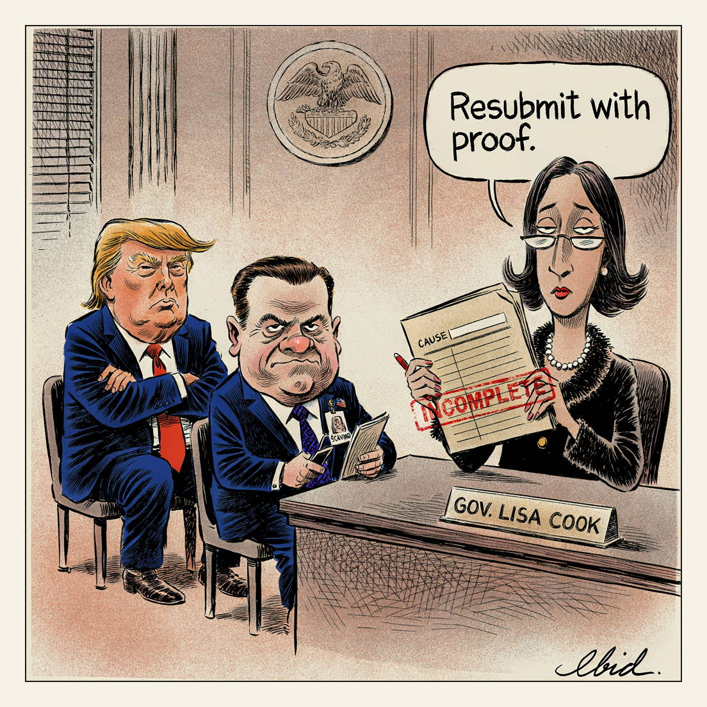

Denied. For cause.
Underwriting

President Trump has renewed his effort to remove Federal Reserve Governor Lisa Cook after the Supreme Court blocked his first attempt in a 5-4 ruling that left lower courts to decide whether such claims constitute 'cause' for removal. Deputy White House chief of staff Daniel Scavino sent Cook a letter this week demanding she answer unproven mortgage-fraud allegations first raised by Trump ally William Pulte, who oversees Fannie Mae and Freddie Mac. Cook's attorney Abbe Lowell called the allegations 'as baseless now as they were a year ago.'